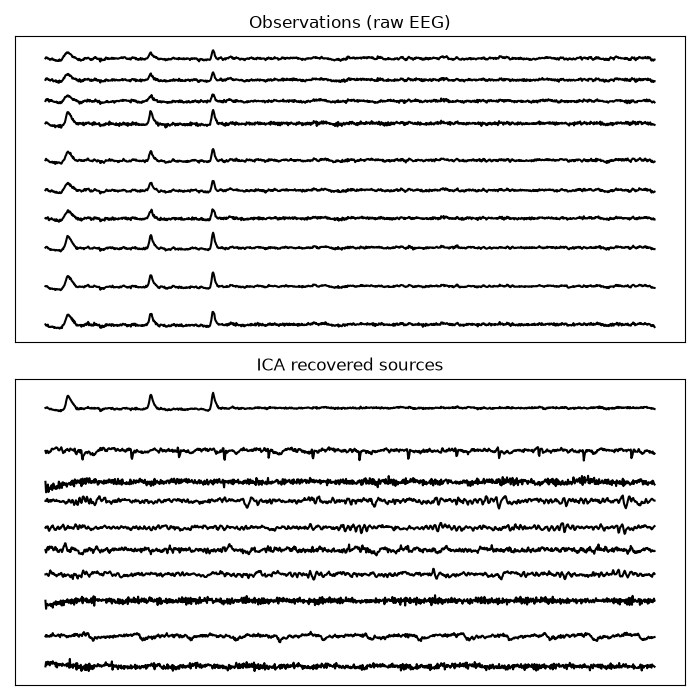

Note
Go to the end to download the full example code.
The example runs the Picard-O algorithm proposed in:
Pierre Ablin, Jean-François Cardoso, Alexandre Gramfort “Faster ICA under orthogonal constraint” ICASSP, 2018 https://arxiv.org/abs/1711.10873
# Author: Pierre Ablin <pierre.ablin@inria.fr>
# Alexandre Gramfort <alexandre.gramfort@inria.fr>
# License: BSD 3 clause
import numpy as np
import matplotlib.pyplot as plt
import mne
from mne.datasets import sample
from scipy.stats import kurtosis
from picard import picard
print(__doc__)
Generate sample EEG data
data_path = sample.data_path()
raw_fname = data_path / 'MEG/sample/sample_audvis_filt-0-40_raw.fif'
raw = mne.io.read_raw_fif(raw_fname, preload=True)
raw.filter(1, 40, n_jobs=1) # 1Hz high pass is often helpful for fitting ICA
picks = mne.pick_types(raw.info, meg=False, eeg=True, eog=False,
stim=False, exclude='bads')
random_state = 0
data = raw[picks, :][0]
data = data[:, ::2] # decimate a bit
Using default location ~/mne_data for sample...
Creating /home/circleci/mne_data
Fetching 1 file for the sample dataset ...
Downloading file 'MNE-sample-data-processed.tar.gz' from 'https://osf.io/download/86qa2?version=6' to '/home/circleci/mne_data'.
0%| | 0.00/1.65G [00:00<?, ?B/s]
0%| | 1.93M/1.65G [00:00<01:25, 19.3MB/s]
0%|▏ | 6.59M/1.65G [00:00<00:46, 35.4MB/s]
1%|▎ | 11.3M/1.65G [00:00<00:40, 40.9MB/s]
1%|▎ | 16.2M/1.65G [00:00<00:37, 43.8MB/s]
1%|▍ | 21.0M/1.65G [00:00<00:35, 45.6MB/s]
2%|▌ | 27.2M/1.65G [00:00<00:31, 51.1MB/s]
2%|▊ | 33.7M/1.65G [00:00<00:29, 55.7MB/s]
2%|▉ | 40.3M/1.65G [00:00<00:27, 58.8MB/s]
3%|█ | 46.8M/1.65G [00:00<00:26, 60.7MB/s]
3%|█▏ | 53.2M/1.65G [00:01<00:25, 61.9MB/s]
4%|█▎ | 59.8M/1.65G [00:01<00:25, 62.9MB/s]
4%|█▍ | 66.3M/1.65G [00:01<00:24, 63.6MB/s]
4%|█▋ | 72.7M/1.65G [00:01<00:24, 63.8MB/s]
5%|█▊ | 79.2M/1.65G [00:01<00:24, 64.3MB/s]
5%|█▉ | 85.7M/1.65G [00:01<00:24, 64.3MB/s]
6%|██ | 92.1M/1.65G [00:01<00:24, 64.4MB/s]
6%|██▏ | 98.7M/1.65G [00:01<00:24, 64.7MB/s]
6%|██▍ | 105M/1.65G [00:01<00:23, 65.1MB/s]
7%|██▌ | 112M/1.65G [00:01<00:23, 65.5MB/s]
7%|██▋ | 119M/1.65G [00:02<00:23, 65.6MB/s]
8%|██▉ | 125M/1.65G [00:02<00:26, 58.5MB/s]
8%|███ | 132M/1.65G [00:02<00:24, 61.3MB/s]
8%|███▏ | 139M/1.65G [00:02<00:24, 63.0MB/s]
9%|███▎ | 145M/1.65G [00:02<00:23, 64.2MB/s]
9%|███▍ | 152M/1.65G [00:02<00:22, 65.4MB/s]
10%|███▋ | 159M/1.65G [00:02<00:22, 66.1MB/s]
10%|███▊ | 166M/1.65G [00:02<00:22, 66.9MB/s]
10%|███▉ | 173M/1.65G [00:02<00:21, 68.8MB/s]
11%|████▏ | 180M/1.65G [00:02<00:21, 69.9MB/s]
11%|████▎ | 188M/1.65G [00:03<00:20, 70.6MB/s]
12%|████▍ | 195M/1.65G [00:03<00:20, 71.1MB/s]
12%|████▋ | 202M/1.65G [00:03<00:20, 71.3MB/s]
13%|████▊ | 209M/1.65G [00:03<00:20, 71.1MB/s]
13%|████▉ | 216M/1.65G [00:03<00:20, 71.1MB/s]
14%|█████▏ | 223M/1.65G [00:03<00:20, 71.2MB/s]
14%|█████▎ | 231M/1.65G [00:03<00:19, 71.5MB/s]
14%|█████▍ | 238M/1.65G [00:03<00:19, 71.1MB/s]
15%|█████▋ | 245M/1.65G [00:03<00:19, 71.2MB/s]
15%|█████▊ | 252M/1.65G [00:03<00:19, 71.0MB/s]
16%|█████▉ | 259M/1.65G [00:04<00:19, 71.3MB/s]
16%|██████▏ | 266M/1.65G [00:04<00:19, 71.2MB/s]
17%|██████▎ | 274M/1.65G [00:04<00:19, 71.4MB/s]
17%|██████▍ | 281M/1.65G [00:04<00:19, 71.3MB/s]
17%|██████▌ | 288M/1.65G [00:04<00:19, 71.7MB/s]
18%|██████▊ | 295M/1.65G [00:04<00:19, 70.9MB/s]
18%|██████▉ | 302M/1.65G [00:04<00:19, 69.8MB/s]
19%|███████ | 309M/1.65G [00:04<00:19, 68.7MB/s]
19%|███████▎ | 316M/1.65G [00:04<00:20, 66.6MB/s]
20%|███████▍ | 323M/1.65G [00:04<00:19, 66.6MB/s]
20%|███████▌ | 330M/1.65G [00:05<00:20, 64.0MB/s]
20%|███████▋ | 336M/1.65G [00:05<00:21, 60.2MB/s]
21%|███████▉ | 343M/1.65G [00:05<00:21, 62.4MB/s]
21%|████████ | 350M/1.65G [00:05<00:20, 64.9MB/s]
22%|████████▏ | 357M/1.65G [00:05<00:19, 66.5MB/s]
22%|████████▎ | 364M/1.65G [00:05<00:19, 66.3MB/s]
22%|████████▌ | 370M/1.65G [00:05<00:19, 66.1MB/s]
23%|████████▋ | 377M/1.65G [00:05<00:19, 66.3MB/s]
23%|████████▊ | 384M/1.65G [00:05<00:19, 66.7MB/s]
24%|████████▉ | 390M/1.65G [00:06<00:18, 66.8MB/s]
24%|█████████▏ | 397M/1.65G [00:06<00:18, 66.6MB/s]
24%|█████████▎ | 404M/1.65G [00:06<00:18, 66.7MB/s]
25%|█████████▍ | 410M/1.65G [00:06<00:18, 66.6MB/s]
25%|█████████▌ | 417M/1.65G [00:06<00:18, 66.6MB/s]
26%|█████████▋ | 424M/1.65G [00:06<00:18, 66.7MB/s]
26%|█████████▉ | 430M/1.65G [00:06<00:18, 66.4MB/s]
26%|██████████ | 437M/1.65G [00:06<00:18, 66.3MB/s]
27%|██████████▏ | 444M/1.65G [00:06<00:18, 66.5MB/s]
27%|██████████▎ | 450M/1.65G [00:06<00:18, 66.3MB/s]
28%|██████████▌ | 457M/1.65G [00:07<00:17, 66.5MB/s]
28%|██████████▋ | 464M/1.65G [00:07<00:20, 59.3MB/s]
28%|██████████▊ | 470M/1.65G [00:07<00:19, 59.2MB/s]
29%|██████████▉ | 477M/1.65G [00:07<00:18, 63.0MB/s]
29%|███████████▏ | 484M/1.65G [00:07<00:17, 65.9MB/s]
30%|███████████▎ | 492M/1.65G [00:07<00:16, 68.3MB/s]
30%|███████████▍ | 499M/1.65G [00:07<00:16, 69.4MB/s]
31%|███████████▋ | 506M/1.65G [00:07<00:16, 69.6MB/s]
31%|███████████▊ | 514M/1.65G [00:07<00:15, 71.8MB/s]
32%|███████████▉ | 521M/1.65G [00:07<00:15, 73.3MB/s]
32%|████████████▏ | 529M/1.65G [00:08<00:15, 74.4MB/s]
32%|████████████▎ | 537M/1.65G [00:08<00:14, 75.2MB/s]
33%|████████████▌ | 545M/1.65G [00:08<00:14, 75.7MB/s]
33%|████████████▋ | 552M/1.65G [00:08<00:14, 76.0MB/s]
34%|████████████▊ | 560M/1.65G [00:08<00:14, 76.2MB/s]
34%|█████████████ | 568M/1.65G [00:08<00:14, 76.5MB/s]
35%|█████████████▏ | 575M/1.65G [00:08<00:14, 76.7MB/s]
35%|█████████████▍ | 583M/1.65G [00:08<00:13, 77.0MB/s]
36%|█████████████▌ | 591M/1.65G [00:08<00:13, 77.1MB/s]
36%|█████████████▊ | 599M/1.65G [00:08<00:13, 77.3MB/s]
37%|█████████████▉ | 606M/1.65G [00:09<00:13, 77.4MB/s]
37%|██████████████ | 614M/1.65G [00:09<00:13, 77.3MB/s]
38%|██████████████▎ | 622M/1.65G [00:09<00:13, 77.3MB/s]
38%|██████████████▍ | 630M/1.65G [00:09<00:13, 77.3MB/s]
39%|██████████████▋ | 637M/1.65G [00:09<00:13, 77.1MB/s]
39%|██████████████▊ | 645M/1.65G [00:09<00:13, 77.3MB/s]
39%|███████████████ | 653M/1.65G [00:09<00:12, 77.4MB/s]
40%|███████████████▏ | 661M/1.65G [00:09<00:12, 77.4MB/s]
40%|███████████████▎ | 668M/1.65G [00:09<00:12, 77.4MB/s]
41%|███████████████▌ | 676M/1.65G [00:09<00:12, 77.5MB/s]
41%|███████████████▋ | 684M/1.65G [00:10<00:12, 77.5MB/s]
42%|███████████████▉ | 692M/1.65G [00:10<00:12, 77.4MB/s]
42%|████████████████ | 699M/1.65G [00:10<00:12, 77.3MB/s]
43%|████████████████▎ | 707M/1.65G [00:10<00:12, 77.4MB/s]
43%|████████████████▍ | 715M/1.65G [00:10<00:12, 77.4MB/s]
44%|████████████████▌ | 723M/1.65G [00:10<00:12, 77.4MB/s]
44%|████████████████▊ | 730M/1.65G [00:10<00:11, 77.4MB/s]
45%|████████████████▉ | 738M/1.65G [00:10<00:11, 77.4MB/s]
45%|█████████████████▏ | 746M/1.65G [00:10<00:11, 77.4MB/s]
46%|█████████████████▎ | 754M/1.65G [00:10<00:11, 77.4MB/s]
46%|█████████████████▌ | 761M/1.65G [00:11<00:11, 77.5MB/s]
47%|█████████████████▋ | 769M/1.65G [00:11<00:11, 77.6MB/s]
47%|█████████████████▊ | 777M/1.65G [00:11<00:14, 59.6MB/s]
47%|██████████████████ | 783M/1.65G [00:11<00:14, 59.3MB/s]
48%|██████████████████▏ | 791M/1.65G [00:11<00:13, 63.9MB/s]
48%|██████████████████▎ | 799M/1.65G [00:11<00:12, 67.2MB/s]
49%|██████████████████▌ | 806M/1.65G [00:11<00:12, 70.0MB/s]
49%|██████████████████▋ | 814M/1.65G [00:11<00:11, 72.0MB/s]
50%|██████████████████▉ | 822M/1.65G [00:11<00:11, 73.6MB/s]
50%|███████████████████ | 830M/1.65G [00:12<00:11, 74.6MB/s]
51%|███████████████████▎ | 837M/1.65G [00:12<00:10, 75.5MB/s]
51%|███████████████████▍ | 845M/1.65G [00:12<00:10, 75.7MB/s]
52%|███████████████████▌ | 853M/1.65G [00:12<00:10, 76.1MB/s]
52%|███████████████████▊ | 860M/1.65G [00:12<00:10, 75.8MB/s]
53%|███████████████████▉ | 868M/1.65G [00:12<00:10, 75.6MB/s]
53%|████████████████████▏ | 876M/1.65G [00:12<00:10, 76.0MB/s]
53%|████████████████████▎ | 883M/1.65G [00:12<00:10, 76.3MB/s]
54%|████████████████████▍ | 891M/1.65G [00:12<00:09, 76.4MB/s]
54%|████████████████████▋ | 899M/1.65G [00:12<00:10, 74.6MB/s]
55%|████████████████████▊ | 906M/1.65G [00:13<00:10, 73.3MB/s]
55%|█████████████████████ | 914M/1.65G [00:13<00:10, 67.7MB/s]
56%|█████████████████████▏ | 920M/1.65G [00:13<00:11, 66.1MB/s]
56%|█████████████████████▎ | 928M/1.65G [00:13<00:10, 68.5MB/s]
57%|█████████████████████▌ | 935M/1.65G [00:13<00:10, 69.7MB/s]
57%|█████████████████████▋ | 943M/1.65G [00:13<00:09, 71.4MB/s]
58%|█████████████████████▊ | 951M/1.65G [00:13<00:09, 73.2MB/s]
58%|██████████████████████ | 958M/1.65G [00:13<00:09, 73.8MB/s]
58%|██████████████████████▏ | 966M/1.65G [00:13<00:09, 74.3MB/s]
59%|██████████████████████▎ | 973M/1.65G [00:14<00:09, 74.6MB/s]
59%|██████████████████████▌ | 981M/1.65G [00:14<00:08, 75.3MB/s]
60%|██████████████████████▋ | 988M/1.65G [00:14<00:08, 75.3MB/s]
60%|██████████████████████▉ | 996M/1.65G [00:14<00:08, 75.3MB/s]
61%|██████████████████████▍ | 1.00G/1.65G [00:14<00:08, 75.1MB/s]
61%|██████████████████████▋ | 1.01G/1.65G [00:14<00:09, 68.7MB/s]
62%|██████████████████████▊ | 1.02G/1.65G [00:14<00:08, 70.6MB/s]
62%|██████████████████████▉ | 1.03G/1.65G [00:14<00:08, 72.2MB/s]
63%|███████████████████████▏ | 1.03G/1.65G [00:14<00:08, 73.2MB/s]
63%|███████████████████████▎ | 1.04G/1.65G [00:14<00:08, 69.3MB/s]
63%|███████████████████████▍ | 1.05G/1.65G [00:15<00:08, 70.2MB/s]
64%|███████████████████████▋ | 1.06G/1.65G [00:15<00:08, 71.8MB/s]
64%|███████████████████████▊ | 1.06G/1.65G [00:15<00:08, 73.1MB/s]
65%|███████████████████████▉ | 1.07G/1.65G [00:15<00:07, 74.0MB/s]
65%|████████████████████████▏ | 1.08G/1.65G [00:15<00:07, 74.6MB/s]
66%|████████████████████████▎ | 1.09G/1.65G [00:15<00:07, 75.2MB/s]
66%|████████████████████████▍ | 1.09G/1.65G [00:15<00:07, 75.5MB/s]
67%|████████████████████████▋ | 1.10G/1.65G [00:15<00:07, 75.1MB/s]
67%|████████████████████████▊ | 1.11G/1.65G [00:15<00:07, 75.2MB/s]
68%|████████████████████████▉ | 1.12G/1.65G [00:15<00:07, 75.5MB/s]
68%|█████████████████████████▏ | 1.12G/1.65G [00:16<00:06, 75.6MB/s]
68%|█████████████████████████▎ | 1.13G/1.65G [00:16<00:06, 75.7MB/s]
69%|█████████████████████████▌ | 1.14G/1.65G [00:16<00:06, 75.7MB/s]
69%|█████████████████████████▋ | 1.15G/1.65G [00:16<00:06, 74.8MB/s]
70%|█████████████████████████▊ | 1.15G/1.65G [00:16<00:07, 66.9MB/s]
70%|██████████████████████████ | 1.16G/1.65G [00:16<00:07, 69.3MB/s]
71%|██████████████████████████▏ | 1.17G/1.65G [00:16<00:06, 71.2MB/s]
71%|██████████████████████████▎ | 1.18G/1.65G [00:16<00:06, 72.8MB/s]
72%|██████████████████████████▌ | 1.19G/1.65G [00:16<00:06, 73.8MB/s]
72%|██████████████████████████▋ | 1.19G/1.65G [00:17<00:06, 74.6MB/s]
73%|██████████████████████████▊ | 1.20G/1.65G [00:17<00:06, 75.4MB/s]
73%|███████████████████████████ | 1.21G/1.65G [00:17<00:05, 75.8MB/s]
74%|███████████████████████████▏ | 1.22G/1.65G [00:17<00:05, 75.9MB/s]
74%|███████████████████████████▍ | 1.22G/1.65G [00:17<00:05, 75.2MB/s]
74%|███████████████████████████▌ | 1.23G/1.65G [00:17<00:05, 75.3MB/s]
75%|███████████████████████████▋ | 1.24G/1.65G [00:17<00:05, 75.1MB/s]
75%|███████████████████████████▉ | 1.25G/1.65G [00:17<00:05, 75.2MB/s]
76%|████████████████████████████ | 1.25G/1.65G [00:17<00:05, 75.5MB/s]
76%|████████████████████████████▏ | 1.26G/1.65G [00:17<00:05, 75.7MB/s]
77%|████████████████████████████▍ | 1.27G/1.65G [00:18<00:05, 75.6MB/s]
77%|████████████████████████████▌ | 1.28G/1.65G [00:18<00:05, 75.2MB/s]
78%|████████████████████████████▋ | 1.28G/1.65G [00:18<00:04, 75.3MB/s]
78%|████████████████████████████▉ | 1.29G/1.65G [00:18<00:04, 75.4MB/s]
79%|█████████████████████████████ | 1.30G/1.65G [00:18<00:04, 75.6MB/s]
79%|█████████████████████████████▎ | 1.31G/1.65G [00:18<00:04, 75.6MB/s]
80%|█████████████████████████████▍ | 1.31G/1.65G [00:18<00:04, 75.7MB/s]
80%|█████████████████████████████▌ | 1.32G/1.65G [00:18<00:04, 66.9MB/s]
80%|█████████████████████████████▋ | 1.33G/1.65G [00:18<00:04, 67.8MB/s]
81%|█████████████████████████████▉ | 1.34G/1.65G [00:18<00:04, 68.7MB/s]
81%|██████████████████████████████ | 1.34G/1.65G [00:19<00:04, 69.0MB/s]
82%|██████████████████████████████▏ | 1.35G/1.65G [00:19<00:04, 69.7MB/s]
82%|██████████████████████████████▍ | 1.36G/1.65G [00:19<00:04, 70.0MB/s]
83%|██████████████████████████████▌ | 1.36G/1.65G [00:19<00:04, 70.2MB/s]
83%|██████████████████████████████▋ | 1.37G/1.65G [00:19<00:04, 70.1MB/s]
83%|██████████████████████████████▊ | 1.38G/1.65G [00:19<00:03, 70.3MB/s]
84%|███████████████████████████████ | 1.39G/1.65G [00:19<00:03, 70.3MB/s]
84%|███████████████████████████████▏ | 1.39G/1.65G [00:19<00:03, 70.3MB/s]
85%|███████████████████████████████▎ | 1.40G/1.65G [00:19<00:03, 70.0MB/s]
85%|███████████████████████████████▍ | 1.41G/1.65G [00:19<00:03, 69.8MB/s]
86%|███████████████████████████████▋ | 1.41G/1.65G [00:20<00:03, 67.4MB/s]
86%|███████████████████████████████▊ | 1.42G/1.65G [00:20<00:03, 63.4MB/s]
86%|███████████████████████████████▉ | 1.43G/1.65G [00:20<00:03, 60.6MB/s]
87%|████████████████████████████████ | 1.43G/1.65G [00:20<00:03, 60.9MB/s]
87%|████████████████████████████████▏ | 1.44G/1.65G [00:20<00:03, 56.2MB/s]
87%|████████████████████████████████▎ | 1.44G/1.65G [00:20<00:03, 54.6MB/s]
88%|████████████████████████████████▍ | 1.45G/1.65G [00:20<00:03, 58.4MB/s]
88%|████████████████████████████████▋ | 1.46G/1.65G [00:20<00:03, 61.4MB/s]
89%|████████████████████████████████▊ | 1.47G/1.65G [00:20<00:02, 63.1MB/s]
89%|████████████████████████████████▉ | 1.47G/1.65G [00:21<00:02, 64.8MB/s]
89%|█████████████████████████████████ | 1.48G/1.65G [00:21<00:02, 66.0MB/s]
90%|█████████████████████████████████▎ | 1.49G/1.65G [00:21<00:02, 64.3MB/s]
90%|█████████████████████████████████▍ | 1.49G/1.65G [00:21<00:02, 62.9MB/s]
91%|█████████████████████████████████▌ | 1.50G/1.65G [00:21<00:02, 63.4MB/s]
91%|█████████████████████████████████▋ | 1.51G/1.65G [00:21<00:02, 64.8MB/s]
91%|█████████████████████████████████▊ | 1.51G/1.65G [00:21<00:02, 66.5MB/s]
92%|██████████████████████████████████ | 1.52G/1.65G [00:21<00:01, 67.4MB/s]
92%|██████████████████████████████████▏ | 1.53G/1.65G [00:21<00:01, 68.7MB/s]
93%|██████████████████████████████████▎ | 1.53G/1.65G [00:22<00:01, 66.9MB/s]
93%|██████████████████████████████████▍ | 1.54G/1.65G [00:22<00:01, 67.0MB/s]
94%|██████████████████████████████████▋ | 1.55G/1.65G [00:22<00:01, 68.0MB/s]
94%|██████████████████████████████████▊ | 1.55G/1.65G [00:22<00:01, 68.6MB/s]
94%|██████████████████████████████████▉ | 1.56G/1.65G [00:22<00:01, 69.6MB/s]
95%|███████████████████████████████████ | 1.57G/1.65G [00:22<00:01, 68.8MB/s]
95%|███████████████████████████████████▎ | 1.58G/1.65G [00:22<00:01, 68.3MB/s]
96%|███████████████████████████████████▍ | 1.58G/1.65G [00:22<00:01, 69.3MB/s]
96%|███████████████████████████████████▌ | 1.59G/1.65G [00:22<00:00, 68.3MB/s]
97%|███████████████████████████████████▋ | 1.60G/1.65G [00:22<00:00, 62.9MB/s]
97%|███████████████████████████████████▊ | 1.60G/1.65G [00:23<00:00, 63.0MB/s]
97%|████████████████████████████████████ | 1.61G/1.65G [00:23<00:00, 67.0MB/s]
98%|████████████████████████████████████▏| 1.62G/1.65G [00:23<00:00, 69.8MB/s]
98%|████████████████████████████████████▍| 1.63G/1.65G [00:23<00:00, 72.0MB/s]
99%|████████████████████████████████████▌| 1.63G/1.65G [00:23<00:00, 73.7MB/s]
99%|████████████████████████████████████▋| 1.64G/1.65G [00:23<00:00, 74.9MB/s]
100%|████████████████████████████████████▉| 1.65G/1.65G [00:23<00:00, 75.6MB/s]
0%| | 0.00/1.65G [00:00<?, ?B/s]
100%|█████████████████████████████████████| 1.65G/1.65G [00:00<00:00, 5.85TB/s]
Untarring contents of '/home/circleci/mne_data/MNE-sample-data-processed.tar.gz' to '/home/circleci/mne_data'
Attempting to create new mne-python configuration file:
/home/circleci/.mne/mne-python.json
Could not read the /home/circleci/.mne/mne-python.json json file during the writing. Assuming it is empty. Got: Expecting value: line 1 column 1 (char 0)
Download complete in 57s (1576.2 MB)
Opening raw data file /home/circleci/mne_data/MNE-sample-data/MEG/sample/sample_audvis_filt-0-40_raw.fif...
Read a total of 4 projection items:
PCA-v1 (1 x 102) idle
PCA-v2 (1 x 102) idle
PCA-v3 (1 x 102) idle
Average EEG reference (1 x 60) idle
Range : 6450 ... 48149 = 42.956 ... 320.665 secs
Ready.
Reading 0 ... 41699 = 0.000 ... 277.709 secs...
Filtering raw data in 1 contiguous segment
Setting up band-pass filter from 1 - 40 Hz
FIR filter parameters
---------------------
Designing a one-pass, zero-phase, non-causal bandpass filter:
- Windowed time-domain design (firwin) method
- Hamming window with 0.0194 passband ripple and 53 dB stopband attenuation
- Lower passband edge: 1.00
- Lower transition bandwidth: 1.00 Hz (-6 dB cutoff frequency: 0.50 Hz)
- Upper passband edge: 40.00 Hz
- Upper transition bandwidth: 10.00 Hz (-6 dB cutoff frequency: 45.00 Hz)
- Filter length: 497 samples (3.310 s)
Run ICA on data, after reducing the dimension
Plot results
n_plots = 10
T_plots = 1000
order = np.argsort(kurtosis(Y[:, :T_plots], axis=1))[::-1]
models = [data[:n_plots], Y[order[:n_plots][::-1]]]
names = ['Observations (raw EEG)',
'ICA recovered sources']
fig, axes = plt.subplots(2, 1, figsize=(7, 7))
for ii, (model, name, ax) in enumerate(zip(models, names, axes)):
ax.set_title(name)
ax.get_xaxis().set_visible(False)
ax.get_yaxis().set_visible(False)
offsets = np.max(model, axis=1) - np.min(model, axis=1)
offsets = np.cumsum(offsets)
ax.plot((model[:, :T_plots] + offsets[:, np.newaxis]).T, 'k')
fig.tight_layout()
plt.show()

Total running time of the script: (1 minutes 5.843 seconds)